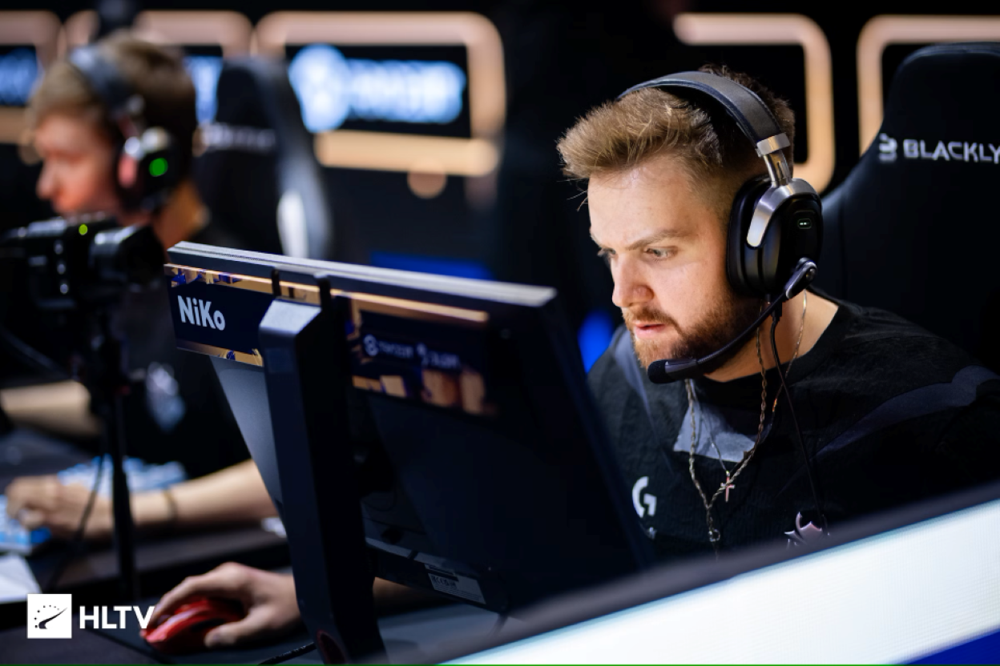
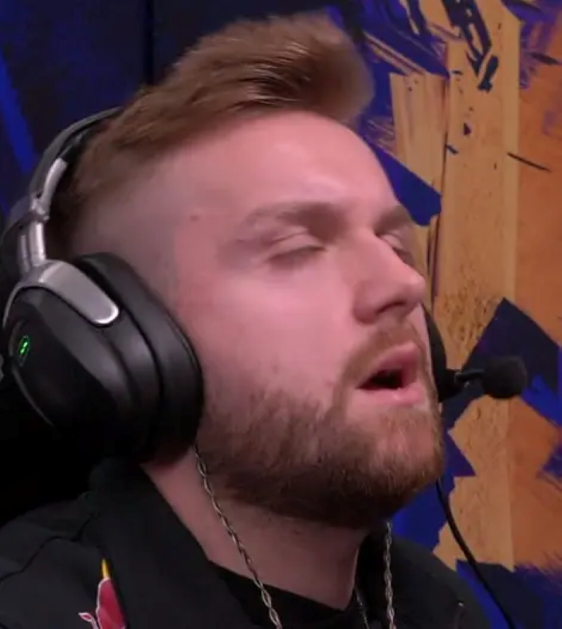

G2-Esport

Niko,全名[Nikola "NiKo" Kovač,1997年2月16日出生于波黑,是G2电子竞技俱乐部的CS职业选手。他以其卓越的技术和出色的表现,被誉为CS史上最优秀的步枪手之一.
职业生涯 Niko的职业生涯始于2012年,当时他加入了iNation战队,开始了他的职业CS生涯。此后,他先后效力于多个知名战队,包括FaZe,mousesports,直到2020年加入G2,至今仍在G2效力。在他的职业生涯中,Niko获得了多项重要赛事的冠军和亚军,包括2023年巴黎Major传奇组、2022年安特卫普Major传奇组、2021年斯德哥尔摩Major亚军等。
成就与荣誉 Niko在多个Major赛事中表现出色,帮助队伍取得了多项重要成就。他在2023年巴黎Major中表现出色,带领G2战队取得了传奇组冠军。此外,他还曾在2019年柏林Major、2019年IEM卡托维兹、2018年伦敦Major等赛事中取得优异成绩.
近期表现 在刚刚结束的新加坡BLAST世决上,Niko所在的G2以3:0的比分击败Spirit,他在比赛中打出了1.21rating和84ADR的数据,显示出他近期状态的稳定和出色表现.
装备配置 Niko在比赛中的装备配置包括鼠标垫为SteelSeries QcK Heavy,显示器为ZOWIE by BenQ XL2540,


